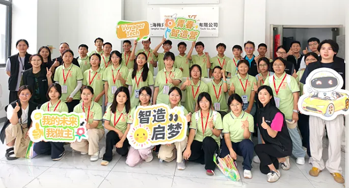
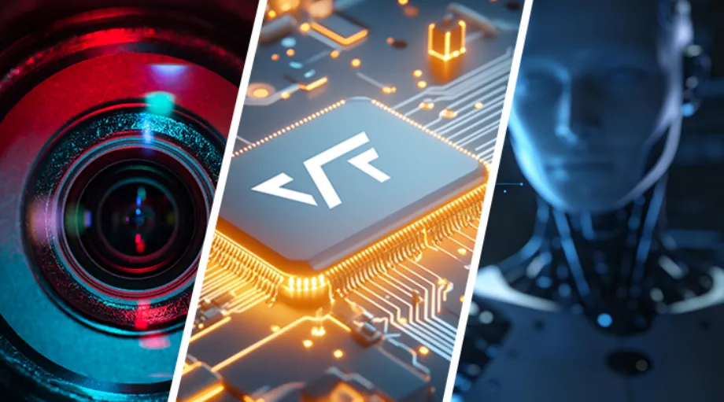
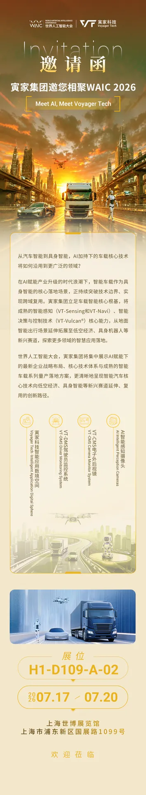
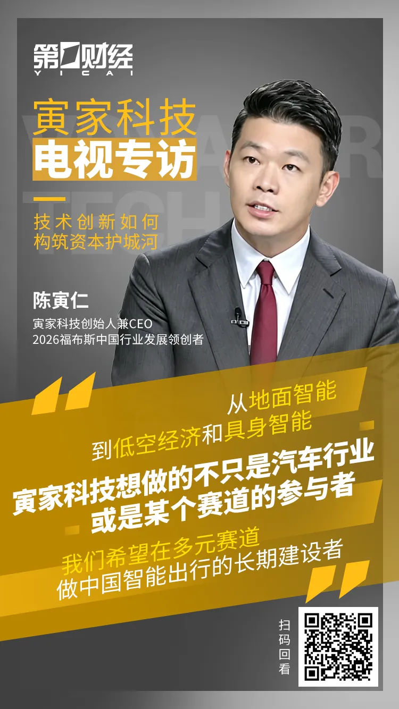

082026
聚力巴西，深化南美布局 | 寅家科技携手梅克朗、Metagal 亮相梅赛德斯 - 奔驰技术日
携手巴西本地战略伙伴梅克朗和 Metagal ，寅家科技 首次亮相巴西戴姆勒技术交流日，进一步深化集团在南美市场的布
News Center
携手巴西本地战略伙伴梅克朗和 Metagal ，寅家科技 首次亮相巴西戴姆勒技术交流日，进一步深化集团在南美市场的布
每一次出行，安全都是第一命题。 世界卫生组织（WHO）公开数据显示， 2025年，全球约116万人死于道路交通事故。

盛夏清风，载梦而来珍珠少年，踏约而至 7月21日 在寅家科技位于嘉兴平湖的智造基地少年壮志邂逅科创之光 智行向新，启

世界人工智能合作组织在上海应运而生 在"智能伙伴共创未来"主题下 本届大会"三地四馆"联动 展览总面积突破10万平方

从汽车智能到具身智能，A加持下的车载核心技术 将如何沿用到更广泛的领域? 在AI赋能产业升级的时代浪潮下，智能车载作

近日，寅家科技创始人、董事长兼 CEO 陈寅仁有幸接受第一财经《第一声音》栏目专访，分享中国自研科技企业的发展经验与
Video

“从地面智能到低空经济和具身智能，寅家科技要做的不只是汽车行业，或是某个领域的参与者，我们希望在多元赛道做中国智能出行行业的长期建设者。”